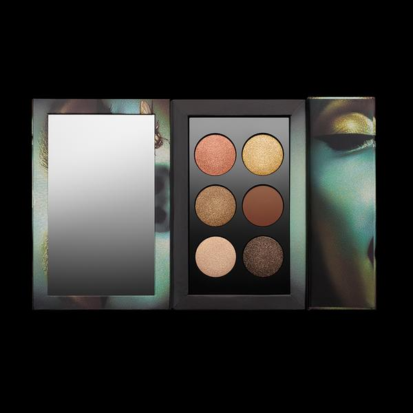
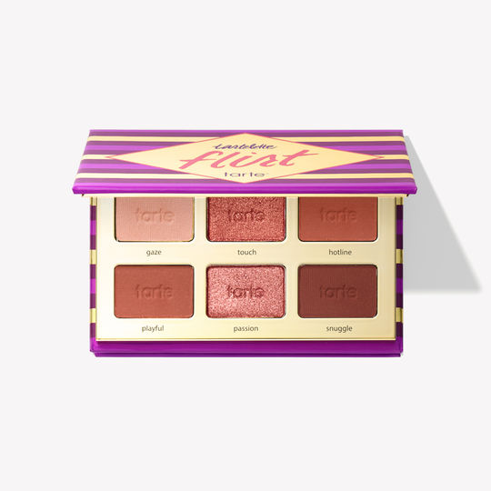
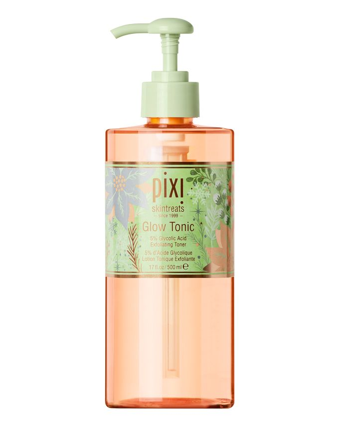
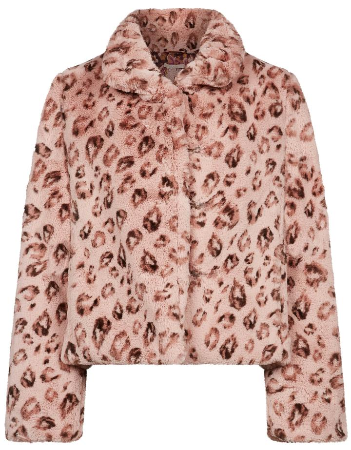

추운겨울 잘 지내고 계신가요?
또다시 색조를 이것저것 사보는 시즌이 왔습니다 :p
눈화장을 거의 안하는 편인데 예쁜게 나오면 또 사고싶고 그렇단 말이죠 :p
사실 색조화장을 좋아해서 산다기보다 브랜드 나 제품이 궁금해서 사보는게 큰것같습니다 ^^;;;
주말 시간여유가 있길래 백만년만에 섀딩도 넣고
섀도우도 칠하고 마스카라도 했더니 brightness 와 contrast 가 0.3g 정도 올라가는 체감을 했습니다.
과연 이래서 화장을 하는군........이란 깨달음을 얻었는데 (이제서야;;;) 그렇다고 이 0.3g을 위해 평소 잠을 줄여야 하나? 라고 물어보면 잘 모르겠네용 ;ㅂ; 걍 몬생기게 살래;;;;
가방도 사고 옷도 사고 노트도 사고(친구 북꼬와 함께 노트덕후;;; 쓰지도않을꺼 예쁜게 보이면 계속 사고 또 삽니다;;)
브레이크 풀린것마냥 이것저것 사다가
아이고 정신차려야지 한 순간 오늘 무뜬금으로 팻 맥그라스 웹사이트에 들어갔고;;;;;
25% 세일한다길래 또다시 충동구매;;

MTHRSHP SUBLIMEBRONZE AMBITION PALETTE요걸 샀습니다
25% 하니까 배송비 정도 빠지는군욤
그르케 반짝이가 훌륭하다던데 기대됩니다 :3

아직까지 섀도우 중 젤 취향인 것은 타르트 입니다
(팻 맥그라스 제품이 오면 순위가 바뀔려나 궁금하네용)
무료배송 행사 하길래 구입한 tartelette™ flirt eyeshadow palette

컬트뷰티 들어갔다가픽시 글로우토닉 대용량이 있길래 하나 구입했습니다
올해 토너 미샤 랑 픽시 둘다 잘 썼어요 :)

현대백화점 어슬렁 거리다가 발견한 퍼코트
네덜란드 브랜드인 오일릴리
브랜드 자체는 전혀 내취향이 아닌데(엄청난 패턴과 칼라의 향연;;;)
요 퍼코트 디피되어있는거 보구 홀린듯 들어가서 입어봤더랬죠
털 보들보들하고 가벼워요
지금은 추워서 못입지만;; 우선 쟁여놨습니다 ^^;;;;;
12월도 절반이 지나가고
시간 빠르네요;;; 12월 - 1월은 한주에 하나씩 예매해둔 공연챙겨보면서 지내고 있고
1월말에 예약해둔 여행을 바라보며 노동하고 있습니다.
여행 스케줄이 좀 빡센데 과연 할수있을까...? 라고 고민하고 있었더니
그럼 힘내서 놀으라고 홍삼지어주신 엄마님
....................우리가족 좀 멋져 ㅋㅋㅋㅋㅋㅋㅋㅋㅋㅋㅋㅋㅋㅋㅋ
그전에 크리스마스와 새해 연휴가 있군요
닭먹으면서 공포영화봐야지 :D :D
들러주시는 모든분들 주말 잘 보내세요 :)